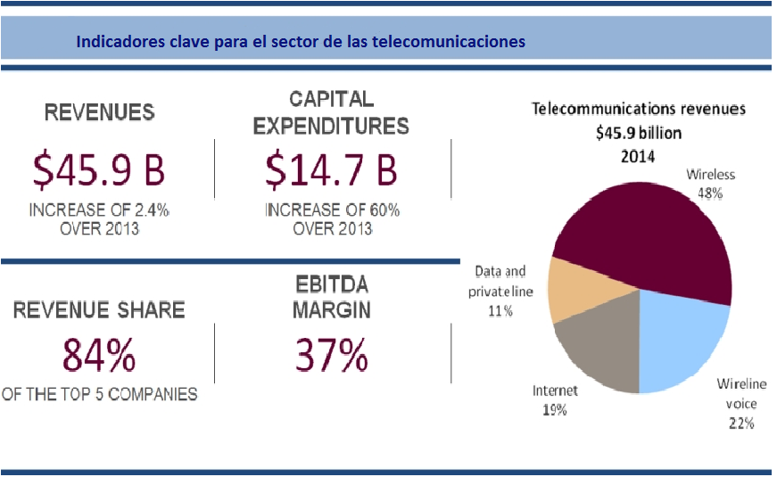
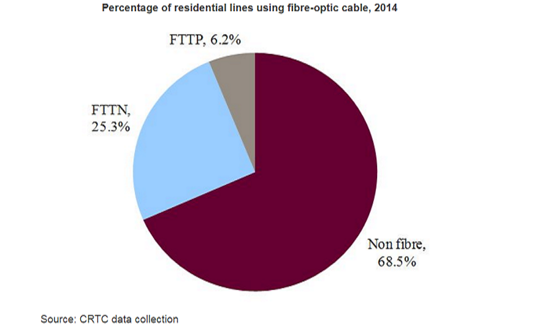
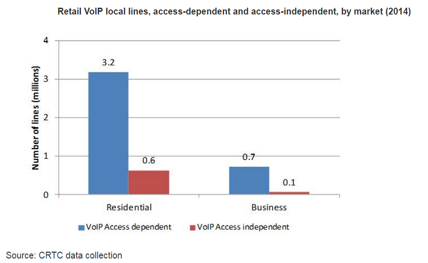
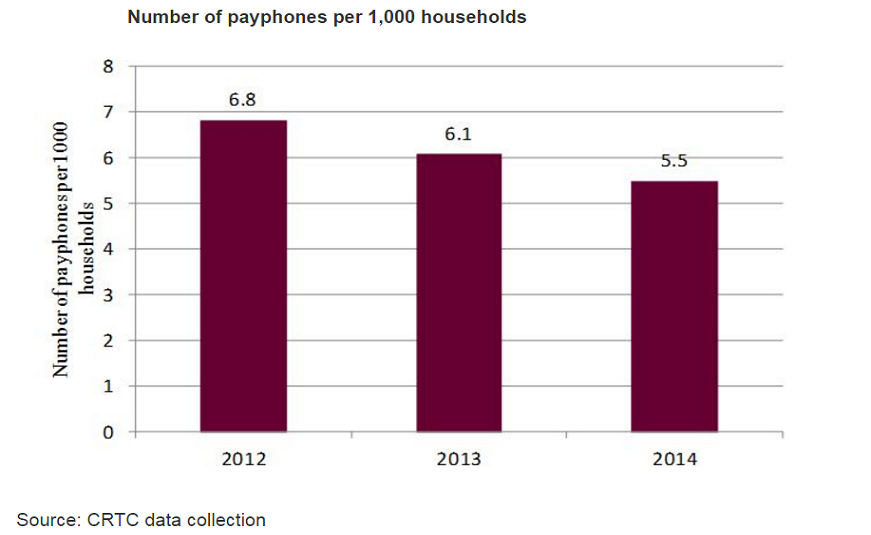
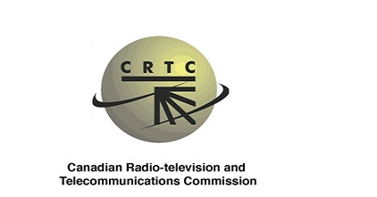

KEY INDICATORS OF THE TELECOMMUNICATIONS SECTOR PERCENTAGE OF RESIDENTIAL LINES USING OPTICAL FIBER


LOCAL LINES VoIP TELEPHONES OF PAYMENT (PER EACH 1,000 INHABITANTS)


Source: Canadian Radio-television and Telecommunications Commission (2014)
REGULATORY ENTITIES
Canadian Radio-television and Telecommunications Commission
Innovation, Science and Economic Development Canada
It works in all areas of the economy and throughout the country to improve investment conditions, performance in innovation and increase participation in world trade.
Go to Web page

It is the television and telecommunications regulatory entity in Canada. It was created when he took over responsibility for regulating telecommunications companies.
Go to web page